A summer refresh doesn't require new furniture or a repaint.
Twelve smaller swaps, fabric, texture, scent, a bit of color, cover most of what actually makes a home feel like the season shifted.

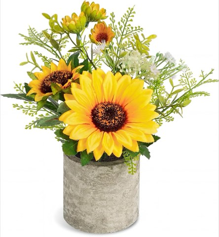
COCOBOO Sunflower Artificial Flowers in Pot, Yellow Faux Sunflower Decor
Shop on AmazonMistakes Worth Avoiding
Overdoing a single theme, too much nautical, too much tropical, tips a light seasonal refresh into something closer to a costume.
Skipping the outdoor space is the other common miss, given how much summer life actually happens there.
Keeping It Budget-Friendly
Most of these swaps work with items already on hand, rearranging, moving existing plants, or simply decluttering winter-heavy textiles costs nothing beyond time.
Spreading the swaps across a few weekends, rather than all at once, also keeps the refresh from feeling like a single expensive project.
12 Easy Ways to Refresh a Home
1. Add Small Pops of Color
A few bright accents, a pillow, a vase, a small object, finish the refresh without requiring a full color overhaul anywhere in the home.
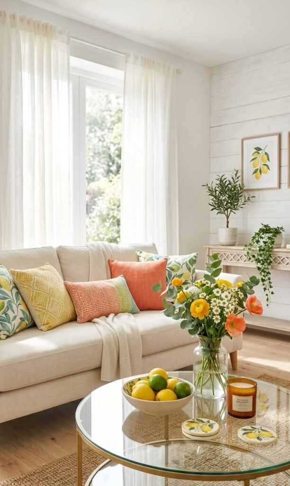
2. Treat the Outdoor Space Like a Real Room
Cushions, a rug, and a bit of styled decor turn a patio or porch into genuine living space for the months it actually gets used.
This is worth real attention given how much more time gets spent outdoors specifically during summer.
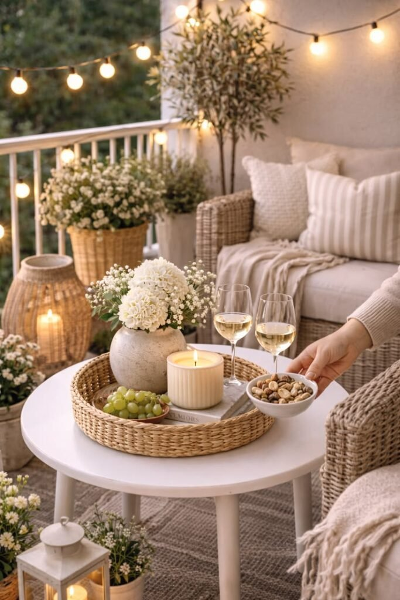
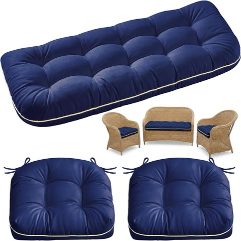
1 MIDDLE ONE Wicker Chair Cushions for Outdoor Furniture, Navy, 3 Piece Set
Shop on Amazon3. Style the Entryway
A seasonal wreath, a lighter runner, or simply fresh flowers on the entry table signal the season's shift the moment someone walks in.
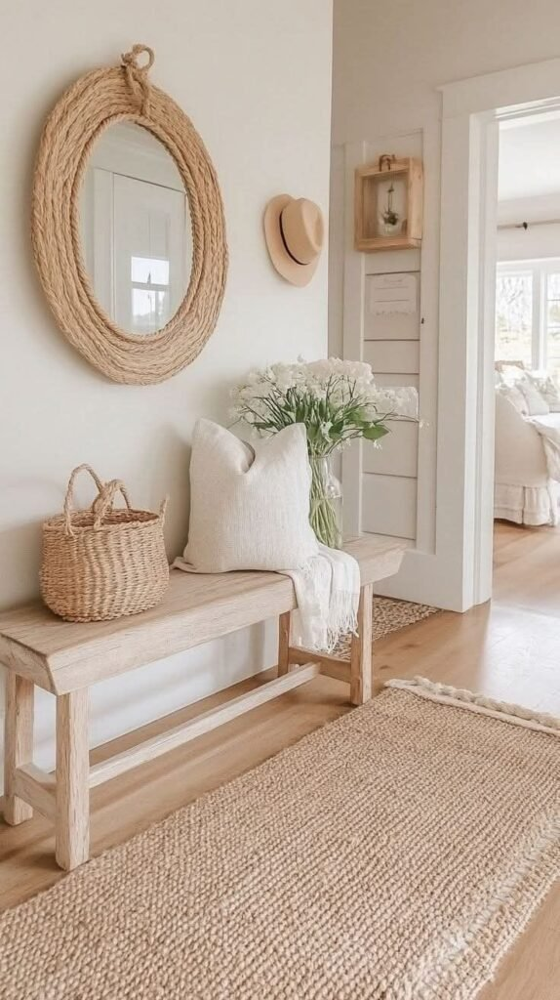
Sggvecsy Daisy and Lavender Wildflower Wreath, 24 Inch, Artificial Spring and Summer
Shop on Amazon4. Add Summer Scents
A candle or diffuser in a fresh, citrus or coconut-adjacent scent does as much for the seasonal feeling as any visible decor change.
This is one of the fastest swaps on this list, and one of the easiest to change back later.
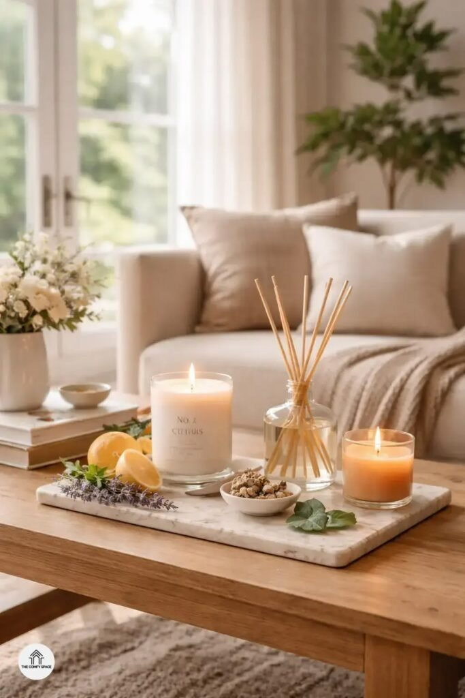
5. Refresh the Dining Table
A lighter runner, seasonal centerpiece, or simply fresh flowers resets the dining table for the season in a few minutes.
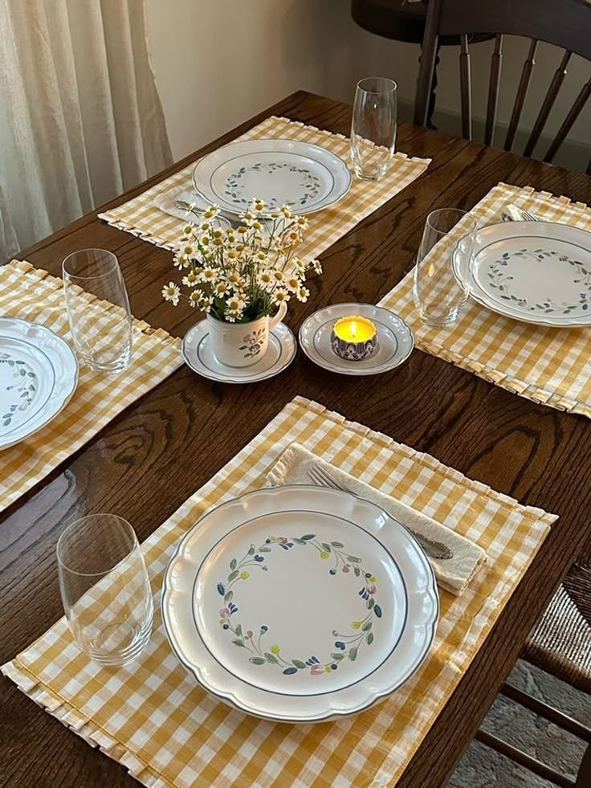

6. Update the Wall Decor
Swapping in a lighter-toned print or a piece with a summery subject refreshes a wall without needing to rehang everything in the room.
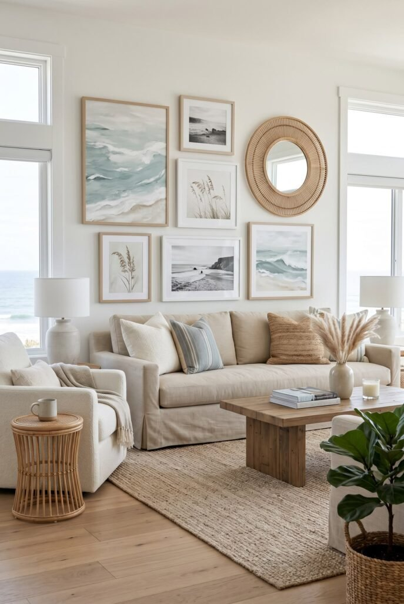
Preppy Ocean Surf Beach Wall Art Poster Set, 6 Piece Summer Gallery Prints
Shop on Amazon7. Style the Coffee Table for the Season
A simple swap, a lighter tray, a seasonal bowl, a small plant, refreshes one of the most visible surfaces in the living room for minimal effort.
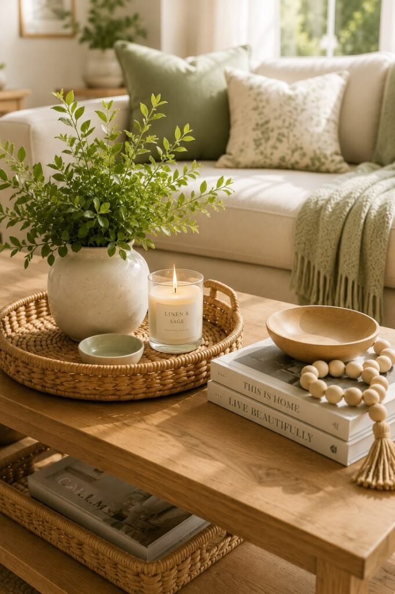
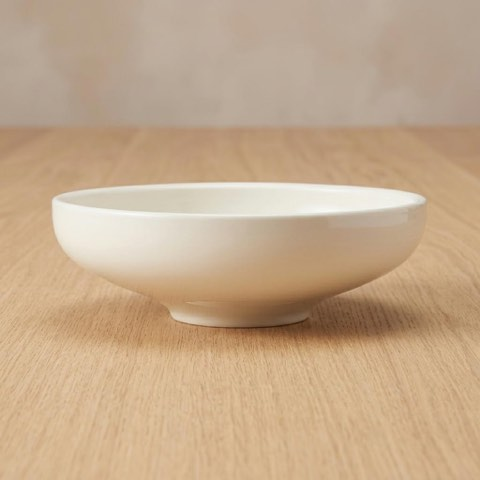
Decorative Ceramic Bowl for Entryway Table, 7.6 Inch, Candy and Jewelry Dish
Shop on Amazon8. Hang Sheer Curtains
Lightweight, breezy curtains let in more natural light and air than heavier drapery, reinforcing the season's airier feel.
This swap is seasonal and reversible, easy to switch back once cooler weather returns.
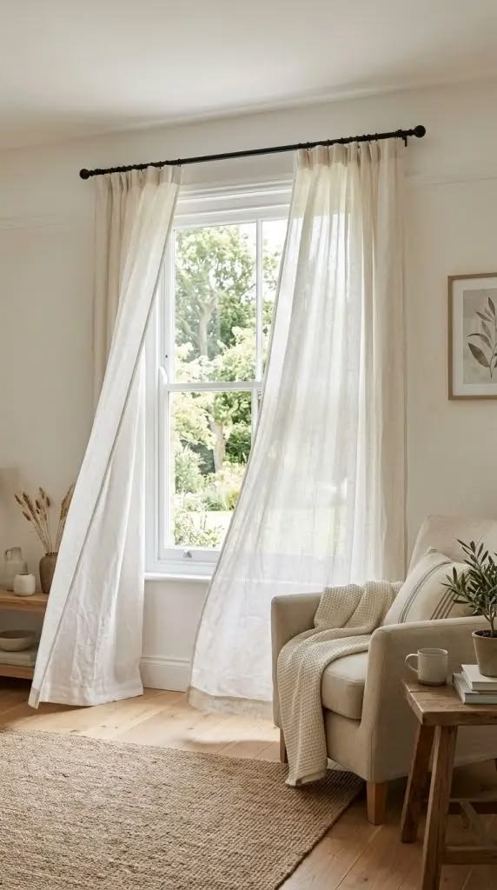
Tide and Tales 3D Coastal Wall Art, Framed Set of 4, Beach Decor, Blue
Shop on AmazonPreppy Ocean Surf Beach Wall Art Poster Set, 6 Piece Summer Gallery Prints
Shop on Amazon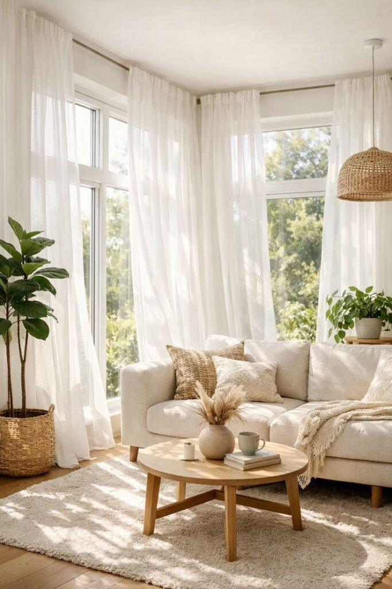
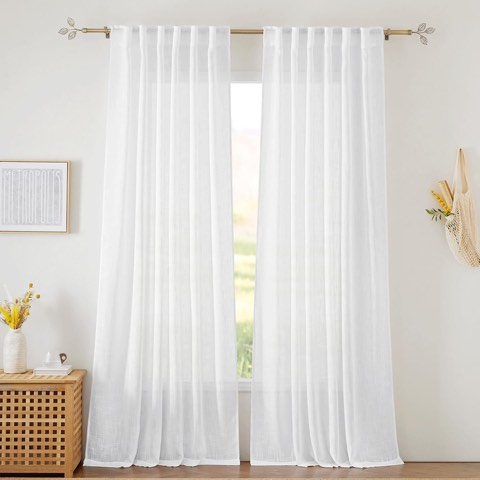
RYB HOME White Sheer Curtains for Living Room and Patio Door, 52 x 95 Inch
Shop on Amazon9. Bring In Fresh Greenery
New plants, or simply moving existing ones to more visible spots, reinforces the season's outdoor connection indoors.
This is one of the easiest ways to add life to a room without any real redecorating.
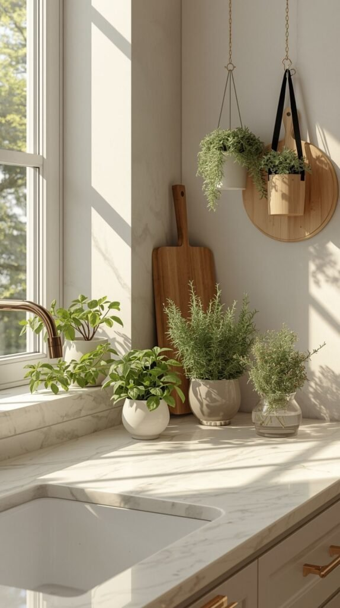
Yankee Candle Sicilian Lemon Scented Candle, 22 oz Large Jar
Shop on AmazonYankee Candle Coconut Beach Scented Candle, 22 oz Large Jar
Shop on Amazon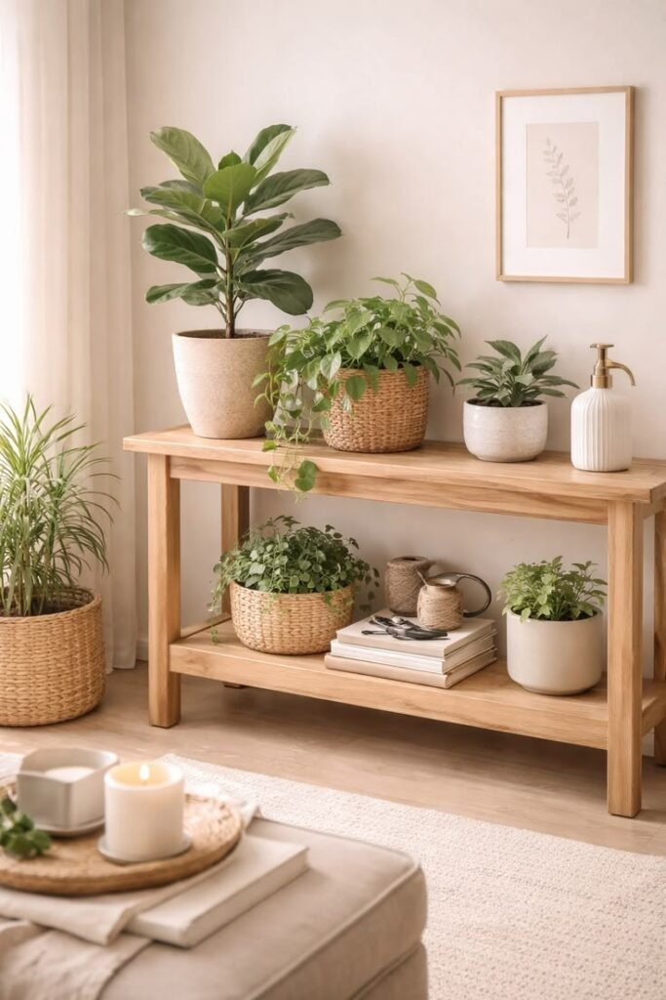
XXXFLOWER Plant Terrarium with Wooden Stand, Glass Bulb Propagation Station
Shop on Amazon
10. Add Natural Texture
Rattan, jute, and woven materials bring a tactile, warm-weather quality that heavier textiles can't replicate.
This texture layer does a lot of the seasonal work, even without changing a single color in the room.
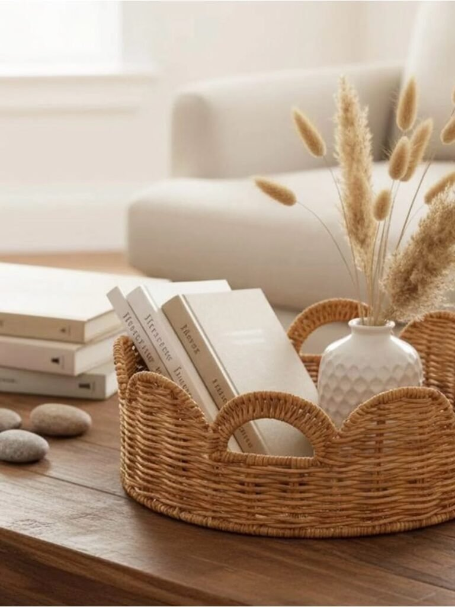
1 MIDDLE ONE Wicker Chair Cushions for Outdoor Furniture, Navy, 3 Piece Set
Shop on AmazonMontVoo Indoor Outdoor Patio Rug, 5 x 7 Ft, Polypropylene
Shop on Amazon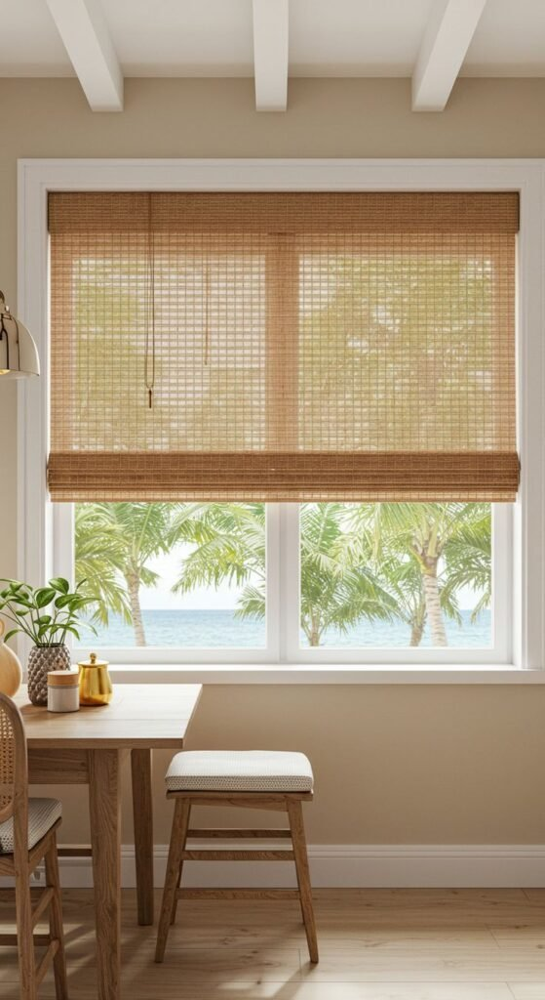
11. Refresh the Bedding
A lighter duvet or a simple top-sheet-only setup, in a brighter color, changes the bedroom's whole feel for the season.
This also solves a genuine comfort problem, since heavier bedding becomes uncomfortable once temperatures rise.
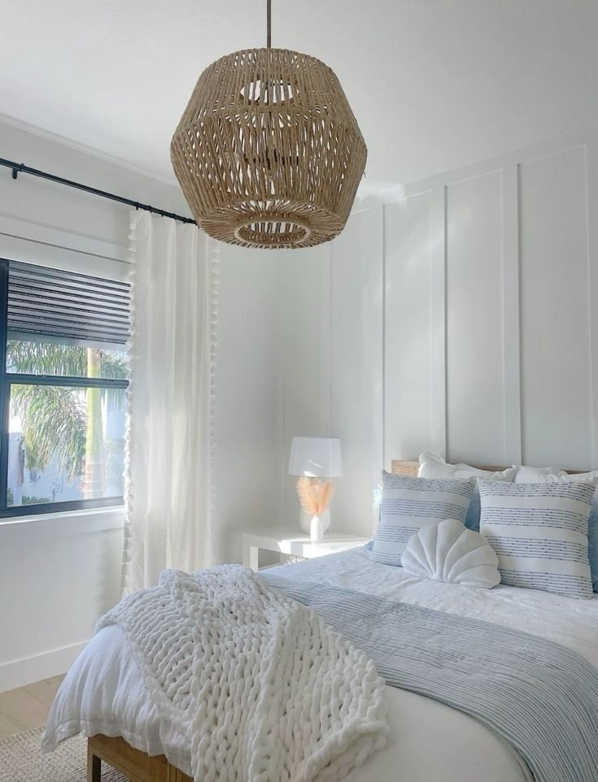
12. Swap In Light Fabrics
Linen, cotton, and other breathable fabrics replace heavier winter textiles across pillows, throws, and slipcovers for an instantly lighter feel.
This is one of the fastest, lowest-cost swaps on this entire list, since it touches items already in most homes.
Choosing a Style That Fits
Light, airy, and a little relaxed is the common thread across most summer decor approaches, whether that leans coastal, Mediterranean, or simply brighter than the rest of the year.
Picking a general direction before starting keeps the smaller individual swaps feeling cohesive rather than random.
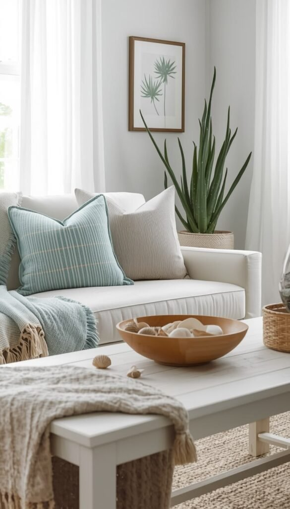
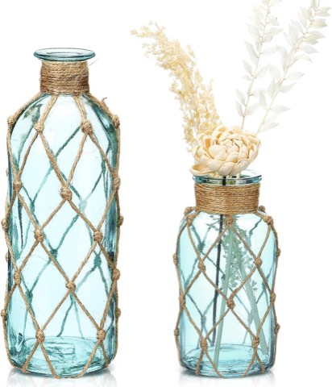
Chuangdi Set of 2 Coastal Glass Flower Vases with Boho Rope, Light Blue
Shop on Amazon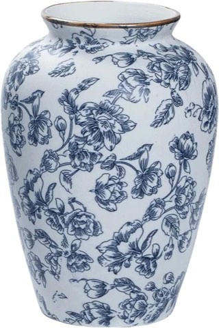
Blue and White Chinoiserie Vase, Vintage Ceramic Vase with Antique Design
Shop on AmazonFinal Thoughts
None of these 12 swaps need to happen in one day.
Start with bedding and scent, since both have the most immediate daily impact, then layer in the rest as time allows.
A summer refresh is really about small, genuinely reversible changes, not a full seasonal renovation.